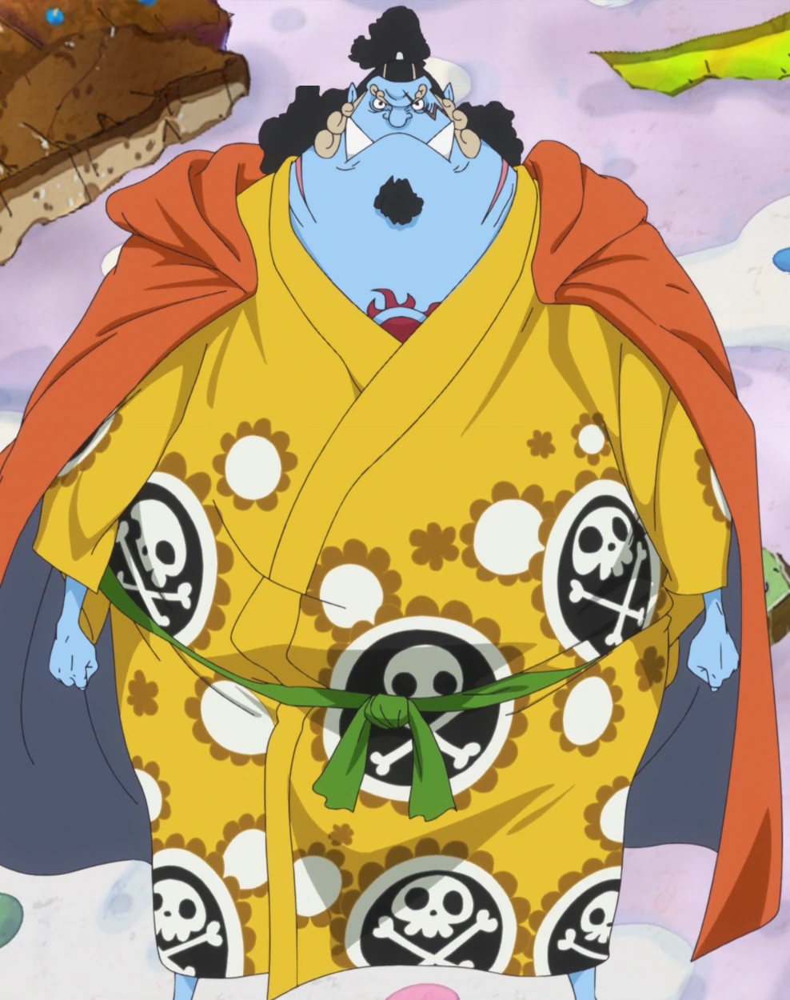
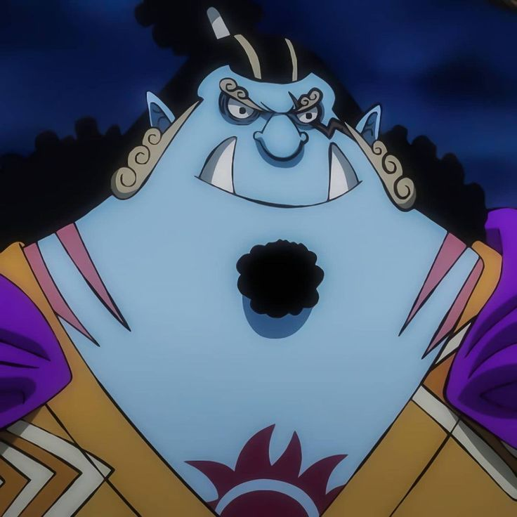

Conocido como el "Caballero del Mar", es el timonel de la tripulación y un ex-Guerrero del Mar (Shichibukai). Su sueño es lograr la verdadera igualdad y paz entre los humanos y los hombres pez.
Antiguo soldado del Reino Ryugu y posteriormente capitán de los Piratas del Sol tras la muerte de Fisher Tiger. Jinbe conoció a Luffy en la prisión de Impel Down, ayudándolo a escapar y estando a su lado durante la Guerra de Marineford, salvándole la vida. Años después en la Isla Gyojin, Luffy lo invitó, pero Jinbe declinó temporalmente para cortar lazos con los Piratas de Big Mom. Finalmente, se integró por completo durante el arco de Wano.

Es un imponente hombre pez tiburón ballena. Su piel es azul claro y tiene el símbolo del sol rojo en su pecho (la marca de los Piratas del Sol). Su constitución corporal es corpulenta y siempre viste con una bata estilo kimono tradicional, una faja, calzado japonés y una capa en los hombros.

Rol: Timonel
Apodo: El Caballero del Mar
Recompensa actual: 1.100.000.000 Berries
Lugar de origen: Grand Line (Isla Gyojin)